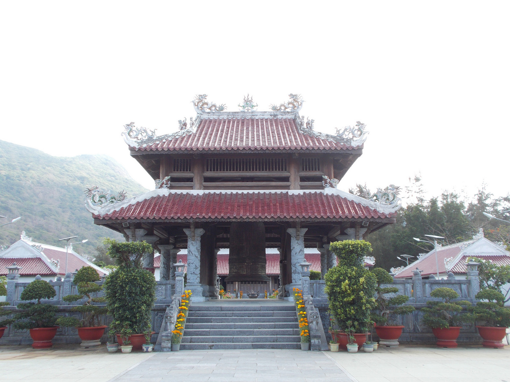
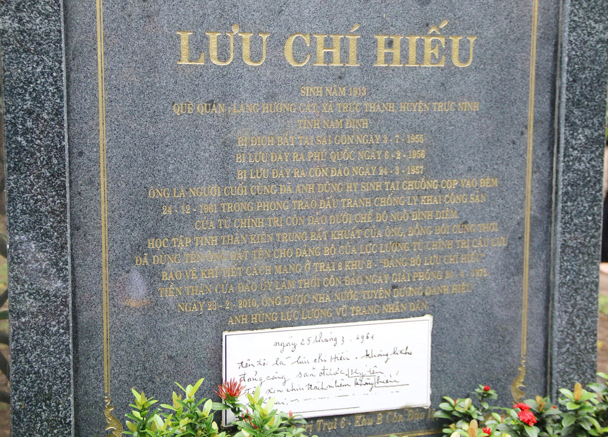

Nhân kỷ niệm Ngày Thương binh - Liệt sĩ, tại Đền thờ Côn Đảo, TP.HCM long trọng tổ chức Lễ giỗ các anh hùng liệt sĩ, chiến sĩ cách mạng và đồng bào yêu nước đã hy sinh tại Côn Đảo.
Côn Đảo là một hòn đảo nổi tiếng nhờ sự đa dạng cả về văn hóa tâm linh và vẻ đẹp nguyên sơ của mình. Đây là một mảnh đất thiêng liêng, là nơi yên nghỉ của biết bao đồng bào và đã từng là nơi giam giữ của vạn cán bộ cách mạng. Đã có hơn 20.000 chiến sĩ bỏ mạng tại Côn Đảo trong hai cuộc kháng chiến lớn dành lại độc cho lập dân tộc. Thật đáng tiếc, đến nay, chỉ xấp xỉ 2.000 phần mộ được tìm thấy, phần lớn đều không rõ tên tuổi, quê quán, ngày mất. Trước tin dữ này, thủ tướng Võ Văn Kiệt đã đề xuất cho tổ chức lễ giỗ tưởng niệm Anh hùng liệt sĩ và đồng bào yêu nước hy sinh tại Côn Đảo nhằm tạo cơ hội để thế hệ đời sau có thể bày tỏ sự biết ơn với những bậc tiền bối. Lễ giỗ diễn ra vào ngày 27 tháng 7 hàng năm, nhân kỷ niệm Ngày Thương binh - Liệt sĩ. Vào dịp này, đông đảo người dân, khách du lịch lưu đến để tưởng niệm những người anh hùng và đồng bào yêu nước đã hy sinh tại Côn Đảo.
Lễ giỗ trang trọng này được tổ chức tại Đền thờ Côn Đảo, thuộc khuôn viên Nghĩa trang Hàng Dương. Ngôi đền là công trình linh thiêng được xây lên bởi những tấm lòng tri ân của những người con mang dòng máu Việt. Trong khu đền chính bố trí một bia đá hình cuốn thư khắc tên hơn 2.000 người chiến sĩ đã hy sinh tại nhà tù Côn Đảo. Trên bàn thờ đầy ắp lễ vật được bố trí đẹp mắt. Mùi hương của nén nhang ngập tràn trong không gian đền thờ.

Để mở đầu lể giỗ, ban đại biểu đã thỉnh 9 tiếng chuông từ đại hồng chung. Trong bầu không khí trang nghiêm, các đại biểu và người tham dự đã thực hiện Lễ chào cờ và mặc niệm tưởng nhớ những con người đã bỏ mạng vì đấu tranh cho tổ quốc. Nhà tù Côn Đảo là một hệ thống nhà tù được xây dựng tại Côn Đảo bởi người Pháp. Khu nhà tù này đã giam giữ những nhân vật tham gia các phong trào cách mạng và những người yêu nước có hành động chống lại chế độ thực dân Pháp, và sau đó được Mỹ sử dụng để giam cầm tù binh trong thời kì kháng chiến chống Mỹ. Nổi bật nhất là “chuồng cọp”, một khu trại giam được Pháp và sau đó là Mỹ sử dụng để giam giữ những tù nhân chính trị cao cấp của Việt Minh và quân Giải phóng.
Khu “chuồng cọp” là nơi biệt giam khắc nghiệt nhất. Tù nhân nơi đây phải ở trong những căn phòng chật hẹp. Điều kiện sống thiếu thốn, không có giường nằm, còn thức ăn thì khan hiếm, lại hay còn bị tra tấn để hỏi cung. Nơi đây sử dụng khổ ải để khuất phục ý chí của tù nhân. Sự tồn tại của khu giam giữ tàn ác này đã được Mỹ giữ bí mật một khoảng thời gian dài để tránh sự phản đối của dư luận.
 Sau các nghi thức chính, là phần dâng hương tưởng niệm. Người dân và du khách có thể tự do đến dâng hương tại Đền thờ Côn Đảo để tưởng nhớ, tri ân các người anh hùng, liệt sĩ và đồng bào yêu nước đã ngã xuống trong lúc bảo vệ sự độc lập và tự do của tổ quốc.
Sau các nghi thức chính, là phần dâng hương tưởng niệm. Người dân và du khách có thể tự do đến dâng hương tại Đền thờ Côn Đảo để tưởng nhớ, tri ân các người anh hùng, liệt sĩ và đồng bào yêu nước đã ngã xuống trong lúc bảo vệ sự độc lập và tự do của tổ quốc.
Lễ giỗ tưởng niệm Anh hùng liệt sĩ và đồng bào yêu nước hy sinh tại Côn Đảo là biểu tượng của lòng biết ơn, ghi nhớ công ơn và sự hy sinh của các bậc tiền bối đã ngã xuống để làm nên nền móng cho con cháu đời sau. Qua lễ giỗ này, nhân dân Việt Nam, đặc biệt là thế hệ trẻ, được tiếp thêm động lực để tiếp bước cha anh, xây dựng nên một Việt Nam phát triển và giàu mạnh.